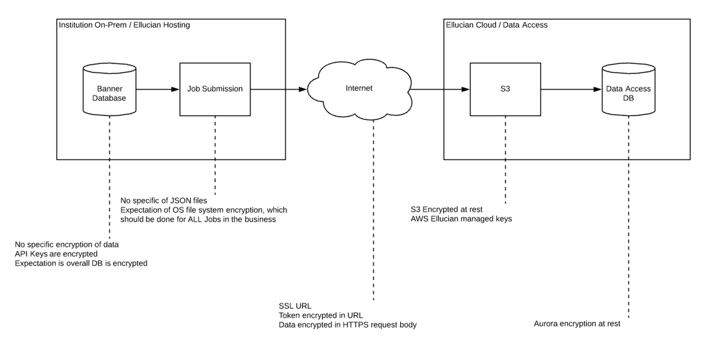
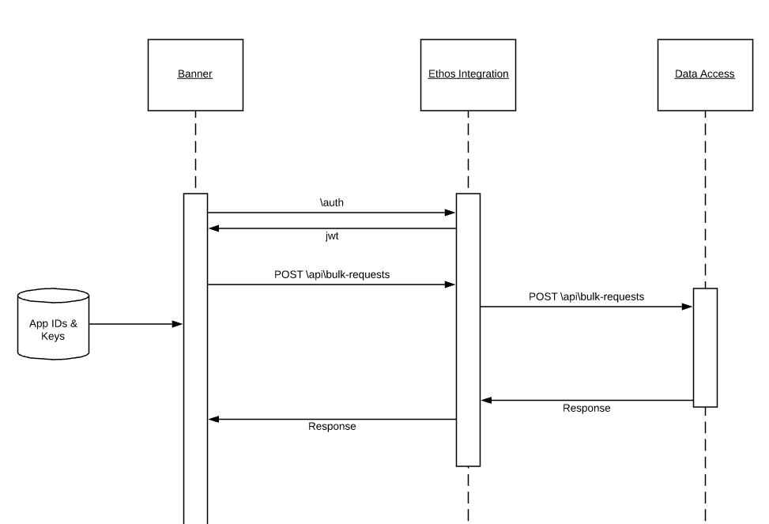
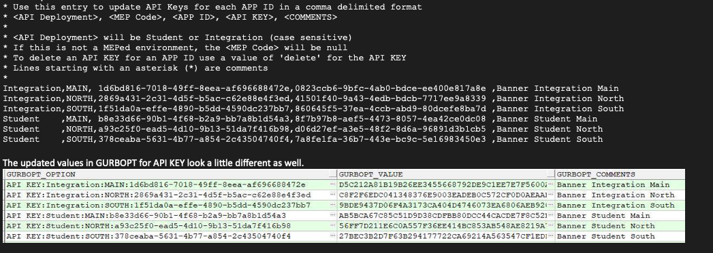

Ellucian Ethos Data Access setup
About Data Access configuration
Ellucian Ethos Integration communicates with your authoritative source, such as Ellucian Banner or Ellucian Colleague. Complete the required steps to configure Ellucian Ethos Data Access so that it can communicate with your authoritative source.
Set up the authoritative source in Ethos Integration
Configure your authoritative source, such as Banner or Colleague, to communicate with Ellucian Ethos Integration.
The authoritative source must have assigned resources in Ethos Integration, and must be set up to publish changes to those resources. For the procedures, see Connect applications to Ethos Integration.
Create a user for proxy API calls
Create a user in Banner or Colleague to support proxy API requests from Ellucian Ethos Data Access.
Before you begin
Ellucian Ethos Data Access makes API requests to Banner or Colleague through Ethos Integration. Each request includes the credentials for a user with permissions to access the data. Use this procedure to create a user in your SIS (Banner or Colleague) with the required permission on the data models that Ellucian Ethos Data Access needs to access.
You will enter these user credentials when you configure Data Access to be able to load information from the source.
In Banner or Colleague, create a user with Read permissions on all resources owned by Banner or Colleague.
- For Banner, see the Banner Ethos APIs section of the Ellucian API Documentation. In the information for Ellucian Ethos Data Model APIs, go to the appropriate domain (such as Foundation APIs or Student APIs for the data model), and then go to the Security Overview in the Banner Ethos API Use content to see the required permissions.
- For Colleague, see Create Colleague users for proxy API requests.
- Note: Some data models do not require that permissions be assigned in Colleague. For example, the Colleague user can read academic-periods information without having specific permissions assigned. If a data model does not have permissions listed in the Colleague documentation, then you do not need to assign permissions for that data model.
Set up Data Access in Ethos Integration
Set up Data Access within Ethos Integration so that it can communicate with your authoritative source, such as Banner or Colleague.
Procedure
Results
Set up file bulk loads with Banner
The default way for Data Access to load data from authoritative sources is by extracting records in subsets, referred to as pages.
For larger or more complex resources, the latest versions of some authoritative sources provide an alternate way for extracting the information, by creating files, and transferring those to the secure cloud locations for Data Access to consume.
For loading data into Data Access using files, instead of the paginated approach, Data Access automatically detects which sources and resources support this method. The authoritative source and Data Access communicate with each other to trigger the generation of the files at the source, and define the target location for the files in the cloud. The cloud location for the files is communicated between the applications through the bulk-request resource, for which Data Access is authoritative.
Colleague does not support Data Access file bulk loads.
File bulk load security considerations
Data Access provides a large bulk load process, also known as S3 bulk load, to decrease the load time of Ellucian Ethos Data Model resource data for institutions into Data Access. Currently this process is mostly used for large resources.
Before you begin
See IPs to Whitelist for whitelisting requirements.
About this task
To accomplish this task, different technologies and processes are utilized, as compared to the Data Access paging bulk load workflow. These instructions provide detailed information on the process and include extra information on the data security during the data transfer to Ellucian Ethos. The data is then stored inside Data Access. The process used for the request and data flow is:
Procedure
Security enforcement
Ellucian has defined how security is enforced for file bulk loads.
The following information explains how security is enforced when following the steps in File bulk load security considerations.
Secured REST API calls
All REST API calls made through Ethos Integration are secured.
Data Access is an Ethos component and can be set up to call the Banner Ethos API through Ethos Integration platform component configuration with username and password authorization. Those client users can be granted very tailored access. This practice is already established by policies and practices with Ethos Integration and its use of HTTP basic authentication.
The communication from Banner to Data Access is also done through Ethos Integration to retrieve S3-signed URLs for the file upload operation. The job submission process for Banner requires the Ethos Integration Application API key to be stored. This stored value is then used to first authenticate by calling the Ethos Integration auth endpoint to retrieve the needed JWT. This JWT is then passed in as a header to the bulk-request Rest API call. Data Access decodes this JWT to identify the caller and returns the signed URL to S3 objects, to prevent data manipulation from non-authorized users.
The signed URL only allows PUT access to the S3 object.
Data extraction and transformation
Source API data extraction and transformation is accomplished through the institution server, which Data Access does not control.
The process generates files that are appended with data. The files are JSON new line delimited format text files. When the file creation is complete, it is a compressed, .zip file. Each file on the Job Submission server is not individually encrypted.
The process requires Job Submission to be properly set up and secured and follow Ellucian best practices and standards. You can acquire recommendations by creating a case with Action Line for the source database product (Banner, Colleague, etc.).
Data transfer
- In transit: The AWS signed URL is a HTTPS request. In transit, the request body is therefore encrypted.
- At rest: The S3 bucket is encrypted using Ellucian-managed keys at AWS. Therefore, when the file loads in S3 its contents are encrypted at rest. The S3 encryption is AES-256. See https://docs.aws.amazon.com/AmazonS3/latest/dev/serv-side-encryption.html.
Data is deleted from S3 after 90 days.
Reading and importing S3 file content
The data ingestion process reads S3 file content and imports its data to the Data Access database client resource table.
Data Access reads the big files by streaming from S3, uncompressing by chunk, and processing each chunk of data. Therefore, the data in transit is only stored in memory for processing (not encrypted) and then written to the Data Access database.
AWS Key Management Service (KMS)

Configure Data Access for file bulk loads
Perform the steps below to grant the authoritative source privileges for accessing the bulk-requests resource owned by Data Access.
Procedure
What to do next
Configure Banner for file bulk loads
Set up Banner to run bulk jobs and configure the communication with Data Access through Ethos Integration.
File bulk loads provide improved performance for APIs that return a large set of resources.
- addresses V11
- contribution-payroll-deductions V8
- employees V12
- instructional-events V8
- ledger-activities V11
- persons V12
- restricted-student-financial-aid-awards V11
- section-instructors V10
- section-registrations V16
- sections V16
- student-academic-periods V1
- student-academic-programs V17
- student-financial-aid-awards V11
- student-grade-point-averages V1
- student-transcript-grades V1
To support Banner file bulk loads, you need to perform both the procedures in this section and the procedure in Configure Data Access for file bulk loads.
Data loads for the supported resources always use the file bulk load route by default. If the file bulk load route is unavailable for any reason, the data load reverts to the paging method.
Colleague does not support Data Access file bulk loads.
Prerequisites
Ensure that the minimum hardware and software requirements are met and complete the prerequisite configurations.
Hardware and software prerequisites
- Banner Ethos API 9.18 or higher.
- Java 8 installed on the job submission server.
- At least 50 GB of free disk space on the job submission server. 100 GB free disk space is recommended. Refer to the table sizing estimates in the Ethos Bulk Load Maintenance (GUAEBLM) process report for additional information on space requirements.
Configurations
- Configure job submission to use Oracle Wallet.
- Check the data privacy rules set up on the GORDMSK Banner administrative page for the resources you are planning to load. Ensure that properties from the data model for a resource are not masked. If you have set up data privacy rules to mask any properties, the file bulk load will not publish those properties in the API response.
- Check the API integration configuration settings before you initiate Data Access loads. Configure these settings through the Ellucian Ethos API Management Center. See API Integration Configuration Settings under the Use section of the Banner Ethos API Administration documentation for information about these settings.
- Select the institution time zone from the Time Zone drop-down list on the Installation Controls (GUAINST) Banner administrative page.
- If your institution has campuses located at different time zones and you want to use data load for the instructional-events API, specify the time zone for each campus on the STVCAMP Banner administrative page. If the time zone is not specified on the STVCAMP page, the API uses the time zone configured on the GUAINST page to report the date-time properties.
ISO Code Configurations
Use the API Management Center to map country, region, sub region, language, and currency ISO codes.
| Banner Administrative Page | Mapping |
|---|---|
| STVNATN | Map ISO 3166-1 alpha-3 or ISO 3166-1 alpha-2 codes in the ISO code column (STVNATN_SCOD_CODE_ISO database column). If you map ISO 3166-1 alpha-2 country codes, you must enter a value of ‘2’ in the NATION.ISOCODE API configuration setting. If you map ISO 3166-1 alpha-3 country codes, enter a value of ‘3’ in the NATION.ISOCODE API configuration setting. |
| STVSTAT | Map ISO 3166-2 codes in the ISO code column ( STVSTAT_SCOD_CODE_ISO database column). |
| STVCNTY | Map ISO 3166-2 codes or a user defined code in the ISO code column (STVCNTY_SCOD_CODE_ISO database column). Refer to the addresses data model for the list of ISO 3166-2 codes for sub region codes of the United Kingdom of Great Britain and Northern Ireland country addresses. For other countries, this configuration set up is optional. |
| STVLANG | Map ISO 639-3 alpha-3 language codes in the ISO code column (STVLANG_SCOD_CODE_ISO database column). |
| GUACURR | Map the institution base currency configured on the GUAINST page (GUBINST_BASE_CURR_CODE) to a suitable ISO 4217 currency code on the GUACURR page. |
Diagnostics
Run the GUREDIA Ethos Diagnostics job submission process. This process provides a report of all configurations and also provides details of data that may need to be corrected before initiating file bulk loads from Data Access.
Configure Banner to run bulk jobs
Provide user permissions and configure the Banner environment variables for the user to run bulk jobs.
Procedure
Ethos Bulk Load Maintenance (GUAEBLM) parameters
GUAEBLM process parameters determine how the process is run and the details that are displayed in the report. Below parameters should be updated using SQL statements in the GURBOPT table.
| Parameter | Description |
|---|---|
| API KEY | The API keys loaded in the Crosswalk Validation (GTVSDAX) page. See Add application information to Banner. |
| BULK AUTH URL | The URL used to retrieve authorization information for bulk loads. For example, https://integrate.elluciancloud.com/auth |
| BULK ERRORS URL | Blank |
| BULK FILE REQUEST URL | The URL used to retrieve Amazon Simple Storage Service information for bulk loads. For example, https://integrate.elluciancloud.com/api/bulk-requests |
| BULK URL REGION | Blank if the location is the United States, should contain a value if the location is outside the US. For example, https://integrate.elluciancloud.com.au/api/bulk-file-requests |
| DEBUG | Set to N unless you want to display additional output during the process to identify issues. |
| DELETE JSON AFTER LOAD | Set to Y if you do not want to retain files they have been successfully loaded to Data Access. If there is an error, files are retained. |
| DROP TABLE AFTER LOAD | Set to Y to remove the temporary tables and views that are created during the bulk load process. |
| ERROR LIMIT | Error information is displayed in reports. This parameter determines the number of errors after which the bulk load process terminates. Set the error count to 100 or less. |
| ETHOS BULK DIR OVERRIDE | JSON files are created in the default job submission directory unless a different directory is specified in this parameter. Because of the large size of the JSON extracts, you may want to specify a different location. Depending on the DROP JSON AFTER LOAD parameter setting, the JSON files may only be stored temporarily. |
| ETHOS BULK TABLESPACE | Enter the TABLESPACE where the JSON staging tables from the Ethos Bulk Extract process will be created. If this value is NULL then the standard default TABLESPACE will be used. Identify a unique TABLESAPCE to prevent storage issues. This value is used when new GURBRUL entries are created. |
| MAX CONCURRENT BULK JOBS | This parameter limits the number of bulk processes that run at the same time. Use this to control the system resources that bulk load processing uses. |
| MAX GURBTRK ERRORS | This parameter controls the details displayed in the summary of the error report. For example, if this parameter is set to 10, the ERROR LIMIT parameter is set to 100, and 50 errors are encountered when running the process, the guaeblt.lis report lists all 50 errors but the summary report at the end lists the first 10 and indicates that there are 40 more errors. |
| SCHEMA VALIDATION | Set to Y to validate the JSON against the schema to ensure that all required properties are present and that all enumerated values follow schema rules. Rows failing validation are dropped from the data export. After the schema validation errors are resolved, the standard change notification process updates Data Access with the change. Setting the value of this parameter to W also ensures that all source records conform to the schema but will continue to load all the records in Data Access without dropping any. Setting the value of this parameter to N does reduce the run time of the process, but any errors will be encountered at the data load time. Set the parameter value to Y during testing, to verify the data. Set the value to N for subsequent runs. |
Configure Banner and Ethos Integration
Configure Banner to communicate with Data Access through Ethos Integration.
Banner communicates with Data Access through Ethos Integration to get signed URLs from Data Access. These URLs are used to upload bulk load files.

Verify the Ethos Integration application setup and update the Application IDs and API keys for each application.
Verify the Ethos Integration application setup
Ensure that a valid QAPI URI is defined for each application and copy the application ID and API keys for each application.
Before you begin
Procedure
What to do next
Add application information to Banner
Add the application IDs and API keys for each application to the GURBOPT Banner table through the GTVSDAX page.
Procedure
Results
Example

Debug bulk load
Use these entries to return debug information for any resource requested by the Ethos bulk load API process.
Procedure
Filter bulk load
Use these entries to supply filter logic for a resource bulk load initiated from Data Access. This is typically not used because all rows are desired during a bulk load.
About this task
Procedure
Bulk load health check
Use these entries to return 10 rows maximum for a resource bulk load initiated from Data Access. This is typically used for a quick check of the Data Access load process.
Procedure
Enable bulk load health check
Use the bulk load health check option to check if the bulk load process works as required.
About this task
Procedure
Initiate the bulk load process with Data Access
Initiate a bulk load through Data Access.
Procedure
Process response and status tracking
API GET calls provide the status of the bulk load process and success or failure responses.
Status tracking
Use an API GET call on the resource to track the status of the bulk load process.
The requestorTrackingId is a GUID that Data Access sends to the bulk job to correlate its load ingestion with the Banner job.
Example response
Success response: Use the job identifier to track the process.
[
{
"resourceName": "student-academic-periods",
"representation": "application/vnd.hedtech.integration.v1.0.0+json",
"applicationId": "1d61ddc1-ce87-4bab-9b2b-f24ac463bcc8",
"requestorTrackingId": "102c26f5",
"jobIdentifier": "154326",
"processingSteps": [
{
"step": "EXTRACT.STEP",
"seq": "1",
"status": "COMPLETED",
"startTime": "2020-11-11 00:46:00.07",
"elapsedTime": "00:00:00.03",
"count": "13517",
"jobIdentifier": "154326"
},
{
"step": "EXTRACT.STAGING",
"seq": "1",
"status": "COMPLETED",
"startTime": "2020-11-11 00:46:00.06",
"elapsedTime": "00:00:00.05",
"count": "13517",
"jobIdentifier": "154326"
},
{
"step": "TRANSFORM.STAGING",
"seq": "1",
"status": "STARTED",
"startTime": "2020-11-11 00:46:04.00",
"count": "9462",
"jobIdentifier": "154327"
},
{
"step": "LOAD.PACKAGE",
"seq": "1",
"status": "NOT STARTED"
}
],
"state": "inProgress",
"status": "Overall Status - EXTRACT:COMPLETED, TRANSFORM:STARTED, LOAD:NOT STARTED -- Total Elapsed Time:00:00:00.05",
"totalSteps": 3,
"stepsProgress": {
"stepExecuting": 2,
"stepDescription": "Transformation",
"stepPercentProgress": 70
}
}
]Process failure response:
{
"errors": [
{
"code": "Global.SchemaValidation.Error",
"description": "Errors parsing input JSON.",
"message": "*ERROR* Invalid applicationId; Not found in GURBOPT."
}
]
}Bulk load schema validation
The schema validation process validates the JSON against the schema.
If the SCHEMA VALIDATION parameter for the Ethos Bulk Load Maintenance (GUAEBLM) process is set to on, then schema validation errors are captured and processing continues till the maximum number of errors specified. The process aborts after the error limit.
If the SCHEMA VALIDATION parameter is set to W (for warning), the GUAEBLT process captures schema validation errors up to the same error limit, but the process does not abort after the limit is reached. After the error limit is reached, further schema validation errors are not captured and the process continues to completion. The schema validation errors captured up to the error limit are saved in the GURBTRK table but are not logged to the log file as no exception is thrown. This prevents the size of the log file from becoming excessively large on the Banner job submission server.
Schema validation parameters
Schema validation parameters determine if validation is enabled or disabled and determine how validation errors are logged.
| GURBOPT Options | Results | |
|---|---|---|
| ERROR LIMIT = 1000 | SCHEMA VALIDATION = N | Schema validation is off. |
| ERROR LIMIT = 0 | SCHEMA VALIDATION = N | Schema validation is off. |
| ERROR LIMIT = -1 | SCHEMA VALIDATION = N | Schema validation is off. |
| ERROR LIMIT = 1000 | SCHEMA VALIDATION = Y | Schema validation captures errors up to the ERROR LIMIT. The Bulk Load Transformation (GUAEBLT) process aborts when the limit is reached. |
| ERROR LIMIT = 0 | SCHEMA VALIDATION = Y | Schema validation captures the first error and the GUAEBLT process aborts. |
| ERROR LIMIT = -1 | SCHEMA VALIDATION = Y | Schema validation captures every error, logging an exception for each one, and the GUAEBLT process continues to completion. View the error report in Data Access. Warning: For a large bulk load, this configuration could produce a large GUAEBLT log file and excessive ERROR rows in the GURBTRK table.
|
| ERROR LIMIT = 1000 | SCHEMA VALIDATION = W | Schema validation captures errors up to the ERROR LIMIT, but no exceptions are logged. The GUAEBLT process continues even after the error limit is reached. View the error report in Data Access. |
| ERROR LIMIT = 0 | SCHEMA VALIDATION = W | Schema validation does not occur because it is set to warning without an error limit. |
| ERROR LIMIT = -1 | SCHEMA VALIDATION = W | Schema validation captures every error, but no exceptions are logged, and the GUAEBLT process continues to completion. View the error report in Data Access. Warning: For a large bulk load, this configuration could produce a large GUAEBLT log file and excessive ERROR rows in the GURBTRK table.
|
Set schema validation for a resource
You can set schema validation on, off, or to warning for each resource that supports bulk load.
About this task
Procedure
Turn off bulk load
Bulk loading is enabled by default. To load data using the paging method, turn off bulk load.
Procedure
- Navigate to the Crosswalk Validation (GTVSDAX) Banner Administrative Page.
- Set the Code = GUAEBLK and Group = BULK LOAD AVAILABLE filters.
- Enter ALL for Concept.
- Set the External Code parameter to N.
- Save the page.